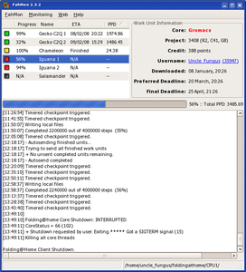
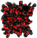

Folding@Home
Archivierte Anleitung
Dieser Artikel wurde archiviert, da er - oder Teile daraus - nur noch unter einer älteren Ubuntu-Version nutzbar ist. Diese Anleitung wird vom Wiki-Team weder auf Richtigkeit überprüft noch anderweitig gepflegt. Zusätzlich wurde der Artikel für weitere Änderungen gesperrt.
Zum Verständnis dieses Artikels sind folgende Seiten hilfreich:
Folding@Home  ist ein Projekt für verteiltes Rechnen (Distributed Computing), ähnlich dem Projekt SETI@Home. Mit Hilfe eines Clients wird ungenutzte Prozessorleistung eines laufenden Rechners dazu verwendet, um das mögliche Faltungsverhalten einer Aminosäurekette zu berechnen.
ist ein Projekt für verteiltes Rechnen (Distributed Computing), ähnlich dem Projekt SETI@Home. Mit Hilfe eines Clients wird ungenutzte Prozessorleistung eines laufenden Rechners dazu verwendet, um das mögliche Faltungsverhalten einer Aminosäurekette zu berechnen.
Indem man diese Leerlaufzeiten dem Projekt über das Internet zur Verfügung stellt, hilft man indirekt bei der Erforschung von Krankheiten wie beispielsweise Alzheimer, Huntington oder Osteogenesis Imperfecta.
Hinweis:
Es ist zu bedenken, dass ein ausgelasteter Prozessor wesentlich mehr Strom verbraucht als wenn er sich im Leerlauf befindet. Betreibt man dauerhaft Folding@Home, wird sich dies also auf der Stromrechnung- als auch durch höheren Hardware-Verschleiß niederschlagen.
Installation¶
Wer vielleicht schon mal unter Windows an dem Folding@Home-Projekt teilgenommen hat, wird sich freuen, dass unter Linux die Clients für Ein- und Mehrkern-Prozessoren kombiniert sind. Man muss sich also nur einen Client laden, der sich dann entweder Uniprozessor- oder SMP-Working Units (WUs) lädt. Wenn man SMP-Folding betreiben will, wird allerdings ein 64bit-Betriebssystem vorausgesetzt!
Download¶
Auf der Download-Seite des Folding-Projektes  der Stanford University können zwei verschiedene Clients heruntergeladen werden: ein 64bit-Build, der auch nur auf 64bit-Betriebsystemen läuft und ein 32bit-Build. Man kann mit dem 32Bit-Client, wenn man ihn unter einem 64bit-Betriebsystem laufen lässt, scheinbar aber auch SMP-Folden.
der Stanford University können zwei verschiedene Clients heruntergeladen werden: ein 64bit-Build, der auch nur auf 64bit-Betriebsystemen läuft und ein 32bit-Build. Man kann mit dem 32Bit-Client, wenn man ihn unter einem 64bit-Betriebsystem laufen lässt, scheinbar aber auch SMP-Folden.
Installation¶
Die Installation läuft bei den beiden Clients fast gleich ab. Wenn man SMP-folden will, benötigt man jedoch, obwohl der Client ein 64bit-Betriebssystem erfordert, 32bit-Bibliotheken. Diese sind im Paket ia32-libs zusammengefasst [1]:
ia32-libs (universe, nur bis Ubuntu 13.04 und bei 64-bit-Systemen)
 mit apturl
mit apturl
Paketliste zum Kopieren:
sudo apt-get install ia32-libs
sudo aptitude install ia32-libs
Anschließend wird ein Ordner im Homeverzeichnis für den Client erstellt, z.B. ~/FAH, und das Client-Archiv in das Verzeichnis kopiert. Anschließend wechselt man in das Verzeichnis und entpackt [2] das Archiv dort.
Ab Ubuntu 10.04 Lucid Lynx besteht die Möglichkeit, den Folding@Home-Clienten mittels des Paketes
origami (universe)
mit apturl
Paketliste zum Kopieren:
sudo apt-get install origami
sudo aptitude install origami
zu verwenden [1].
Danach startet folgender Befehl in einem Terminal-Fenster [3]:
origami name -t GRUPPE -u USERNAME
die Folding@Home-Clienten. Der Vorteil dieser Methode ist, dass Origami selbstständig erkennt, wieviele Rechenkerne im PC stecken und entsprechend viele Instanzen startet. Außerdem richtet es Startskripts ein, so dass Folding@Home beim (Neu-)Start des Rechners automatisch läuft.
Konfiguration¶
Der erste Teil der Konfiguration läuft bei beiden Typen gleich ab. Man benötigt ein Terminal und muss sich im Client-Verzeichnis befinden. Dann startet man die Konfiguration des Clients [3]:
./fah6 -configonly
Der Client fragt anschließend alle nötigen Angaben ab.
Hinweis:
Es ist nicht möglich, den Benutzernamen oder das Team nachträglich zu wechseln, ohne alle seine Punkte zu verlieren. Wenn eine der beiden Sachen verändert wird, wird einfach ein neuer Account angelegt.
| Konfiguration | |
| Parameter | Bedeutung |
| Benutzername: | Hier kann man sich einen aussuchen. |
| Team-Nummer: | Entweder man trägt hier gar nichts ein und foldet ohne ein Team, oder man hat sich vielleicht schon ein Team ausgesucht. Dann trägt man hier die sechsstellige Team-Nummer ein. |
| Passkey: | Dieser ist nur nötig, wenn das Team passwortgeschützt ist. Dann trägt man hier das Passwort ein, ansonsten einfach leer lassen. |
| Ask before [...] work?: | Diese Angabe legt fest, ob der Client nachfragen soll, bevor er abgeschlossene "Working Units" (WUs) sendet. Empfohlen wird, dieses Feld einfach leer zu lassen, was dann "Nein" bedeutet. So kann man wesentlich mehr Arbeit erledigen. |
| Use proxy?: | Wenn man einen Proxy-Server benutzt, hier "yes" eintragen, der Client fragt dann die restlichen Angaben ab. |
| Acceptable size [...]: | Hier wird festgelegt, wie groß die WUs, die sich der Client lädt, sein sollen. Empfohlen ist hier der Standard. |
| Change advanced options?: | Hier "yes" eintragen. |
| Die ersten drei Optionen: | Auf Standard belassen. |
| Pause if [...]: | Interessant für Laptops. Legt fest, ob der Client pausieren soll, wenn der Laptop auf Batterie läuft. |
| Die nächsten 4 Optionen: | Auf Standard belassen. |
| Machine ID: | Wenn man mehrere Clients auf einen Account folden lassen will, muss man Machine-IDs vergeben. Am besten einfach die Clients durchnummerieren. |
| Die nächsten 2 Optionen: | Auf Standard belassen. |
| Additional client parameters: | Diese Option werden wir jetzt brauchen. |
Uniprozessor-Client¶
Wenn man Uniprozessor-Folden will, trägt man jetzt einfach "-verbosity 9" ein. Die letzte Option sollte man auf Standard belassen. Ihre Funktion ist nicht ganz klar. Der Client wird sich anschließend selbst beenden.
SMP-Client¶
Für das SMP-Folden auf Mehrkern-Prozessoren muss man "-smp -verbosity 9" eintragen. Die letzte Option sollte man auf Standard belassen. Ihre Funktion ist nicht ganz klar. Der Client wird sich anschließend selbst beenden.
Überwachung¶
Um einen Überblick zu bekommen, wie schnell der PC foldet, wieviele Punkte man hat und auf welchem Platz man sich in der Rangliste befindet, gibt es mehrere Möglichkeiten.
Internetseiten¶
Zum einen gibt es Webseiten, die Statistiken erstellen. Natürlich bietet das Folding@Home-Projekt selber eine solche Seite an: Folding@Home-Stats . Hier kann man dann sein Team / seinen Account suchen und sich einen Überblick verschaffen. Dann gibt es noch Statistiken von Dritten. Die bekannteste Seite ist wohl KakaoStats . Dort kann man sich noch detailliertere Statistiken ansehen.
|  |
| FahMon |
Programme¶
FahMon¶

Wesentlich komfortabler ist allerdings die Überwachung durch ein Programm, dass auf dem eigenen Rechner läuft. Der bekannteste Vertreter dieser Art ist wohl FahMon . Dieses Programm zeigt detaillierte Informationen über die gerade bearbeitete WUs sowie Deadlines, PPD, etc. an.
Hinweis!
Fremdsoftware kann das System gefährden.
Der Quellcode von FahMon kann von der Entwicklerseite heruntergeladen, entpackt und anschließend kompiliert werden [4]:
cd <FahMon Source-Verzeichnis> ./configure make
Dann kann man sich mit checkinstall ein eigenes Paket erstellen und installieren:
sudo make checkinstall
Links¶
Linux Uniprozessor Guide
- Original-Anleitung zum Uniprozessor-ClientLinux SMP Guide
- Original-Anleitung zum SMP-Client
- Erstellt mit Inyoka
-
 2004 – 2017 ubuntuusers.de • Einige Rechte vorbehalten
2004 – 2017 ubuntuusers.de • Einige Rechte vorbehalten
Lizenz • Kontakt • Datenschutz • Impressum • Serverstatus -
Serverhousing gespendet von